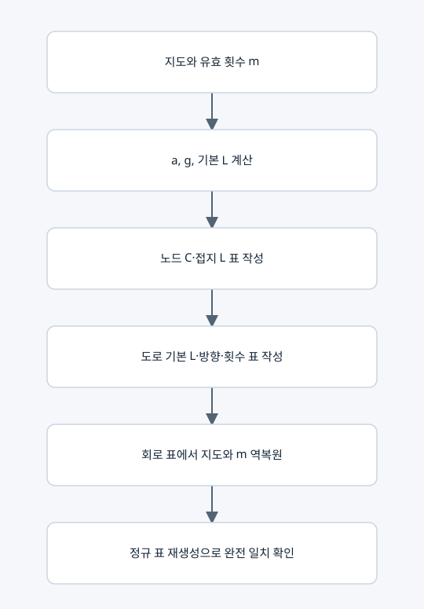

LC 소자 배정과 회로 표의 왕복 변환

입력과 출력
LCModel(grid)는 LC 배정 규칙을 보관한다. encode(m)은 노드 소자 표와 도로 소자 표를 만들고 decode_circuit은 지도와 m을 복원한다.
주요 행렬과 물리량
• 노드: C_i=C★/a_i, 모든 노드에 접지 인덕터 L★.
• 도로 기본 인덕턴스 ell_e=L★/g_e, 활성 유효 인덕턴스 L_eff=ell_e/m_e.
• m_e=0이면 해당 도로는 개방이다. 원래 도로의 기본 L과 라벨은 표에 계속 남긴다.
• Kbar=I+B diag(gm) Bᵀ, R=H Kbar, D=H^(1/2) Kbar H^(1/2).
• matrices(m)는 Kbar와 유리수 R, 수치 대칭 D를 반환하는 보조 기능이다. 운영 ⑤는 이 함수를 후보마다 호출하지 않는다.
요소별 설명
노드 표는 n×8, 도로 표는 p×7이다. 소자 종류 코드는 L=1, C=2이며 방향 코드는 오른쪽=1, y 증가 방향=2, 왼쪽=3, y 감소 방향=4이다. 접지는 0, 가게는 1이다.
decode_circuit은 C로 지연, 기본 L로 도로 비용을 복원한 다음 방향·연결·유효 횟수·정규 표를 검사한다. 단순히 소자 종류 열만 삭제하면 지도 비용이 나오는 것은 아니고 역변환 식을 사용한다.
복사 코드와 함수 목록
원본 그대로의 lc_model.py
LCModel, decode_circuit
표시된 함수 중 예제 생성·교대 투사·수치 행렬은 위 설명의 호출 범위에 따라 보조 기능일 수 있다.